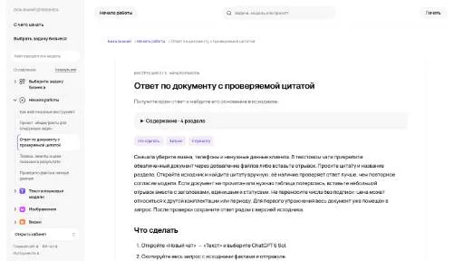

Codex с телефона: как организовать работу с кодом
Как подготовить задачу для Codex, проверить изменения и защитить доступ к проекту при работе с телефона.
Читать статьюОбзоры, инструкции и идеи для работы с искусственным интеллектом.
Как подготовить задачу для Codex, проверить изменения и защитить доступ к проекту при работе с телефона.
Читать статьюЧто проверить при превращении печатного текста в изображение рукописи: разметку, читаемость и назначение файла.
Читать статьюКак отличать анонс интеграции от доступной функции и проверять поддержку устройства, языка и региона.
Читать статьюПроверка моделей, лимитов и оплаты в агрегаторах ИИ без неподтверждённых отзывов и обещаний.
Читать статьюКак использовать ИИ при подготовке изображений товара и не исказить его свойства для покупателя.
Читать статьюКак выбрать режим генерации, проверить результат и уточнить условия доступа в НейроЖуке.
Читать статьюПрактический порядок проверки голоса, произношения и эмоциональной подачи в ElevenLabs.
Читать статьюВыбор снимка, ограничения анимации и проверка артефактов перед публикацией клипа.
Читать статьюЧто проверить при синхронизации фотографии с песней: права, движения губ и итоговый звук.
Читать статьюКак собрать короткое видео с аватаром: сценарий, согласие на образ, синхронизация и экспорт.
Читать статьюВ Молекуле можно подготовить ответ по тексту, который вы уже используете в работе. Возьмите небольшой обезличенный отрывок, задайте конкретный вопрос и проверьте основание ответа в исходном документе.
По этому фрагменту инструкции объясни, какие сведения нужны для принятия заявки. Приведи цитату-основание и список недостающих данных. Не добавляй цену, срок или условие, которого нет в тексте.
